| はじめての統計データ分析 |
| はじめての統計データ分析 |
第1群1の平均値 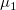 は、第2群では何%点に相当するか。
| 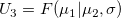 | (3.17) |
実験群と統制群で非重複度が 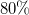 であれば、 その処置によって平均的な生徒が全体の 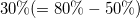 を追い抜くと解釈できる2。
非重複度がある基準確率  よりも大きい確率は、生成量
よりも大きい確率は、生成量
 |
(3.21) |
で計算することができる。
無作為に選んだ一方の群の測定値が、無作為に選んだ他方の群の測定値を上回る確率。
| 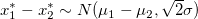 | (3.25) |
から、
| 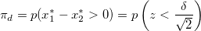 | (3.26) |
と導かれる3。
生成量
| 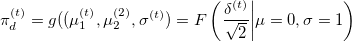 | (3.27) |
を利用して、優越率の事後分布を求める4。
この生成量 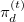 を利用すると、生成量が基準確率 よりも大きい確率を、生成量
| 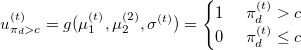 | (3.28) |
のEAPにより評価することもできる。
事後予測分布を利用し、生成量
| 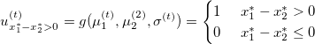 | (3.32) |
のEAPを評価する5。
無作為に選んだ一方の群の測定値と他方の群の測定値の差が閾値 を上回る確率。
| 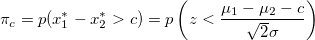 | (3.35) |
優越率と同様、事後分布を直接評価、もしくは事後予測分布を通じて評価することができる。
2群の標準偏差を等しいという制約をおいた場合とおかなかった場合とでは、（いずれか片方の標準偏差を分母とした場合の）標準化された平均値差（効果量）と非重複度の値は食い違いが生じる。 一方、優越率および閾上率にはあまり影響を及ぼさない。
一般に、当該制約が適切である場合は、「制約のあるモデル」の方が、母数の事後標準偏差は小さくなる。
MCMCと相性の良い情報量規準。 将来のデータ 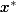 の予測の程度の指標で、WAICの小さなモデルを「良いモデル」とする6。
メモ
95%片側確信区間を求めるために、90%両側確信区間の下側、上側を求めたい。stanでは上下2.5%、25%、50%点のみデフォルトで報告される。ここに5%を追加するにはどうしたらよいか？
メモここまで
メモ
P.81にあるように、母数の事前分布に一様分布 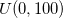 などをstanで設定するにはどのようにしたらよいのだろう？
メモここまで
data{
int<lower=0> n1;
int<lower=0> n2;
vector[1] x1[n1];
vector[1] x2[n2];
}
parameters{
real mu1;
real mu2;
real<lower=1e-10> sigma1;
real<lower=1e-10> sigma2;
}
model{
for(i in 1:n1){
x1[i]~normal(mu1,sigma1);
}
for(i in 1:n2){
x2[i]~normal(mu2,sigma2);
}
}
generated quantities{
real<lower=0,upper=1> p_mu1over2; //[第1群の平均値>第2群の平均値]である確率
real diff_mu; //第1群の平均値-第2群の平均値
real delta; //効果量（第2群のSDを分母とする）
real<lower=0,upper=1> p_delta_overc; //効果量>0.5となる確率
real<upper=1> u3; //非重複率（第1群の平均が第2群の何%点か）
real<lower=0,upper=1> p_u3_overc; //非重複率>0.8となる確率
real<upper=1> pd; //優越率
real<lower=0,upper=1> p_pd_overc; //優越率>0.8となる確率
real<upper=1> pbt; //閾上率（閾値を5点とする）
real<lower=0,upper=1> p_pbt_overc; //閾上率>0.8となる確率
p_mu1over2 = step(mu1-mu2);
diff_mu = mu1-mu2;
delta = (mu1-mu2)/sigma2;
p_delta_overc = step(delta-0.5);
u3 = normal_cdf(mu1,mu2,sigma2);
p_u3_overc = step(u3-0.8);
pd = normal_cdf((mu1-mu2)/sqrt(pow(sigma1,2)+pow(sigma2,2)),0,1);
p_pd_overc = step(pd-0.8);
pbt = normal_cdf((mu1-mu2-5)/sqrt(pow(sigma1,2)+pow(sigma2,2)),0,1);
p_pbt_overc = step(pbt-0.8);
}
x1<-c(
56,55,55,62,54,63,47,58,56,56,57,52,53,50,50,57,57,55,60,65,53,43,60,51,52,
60,54,49,56,54,55,57,53,58,54,57,60,57,53,61,60,58,56,52,62,52,66,63,54,50)
x2<-c(
33,37,59,41,42,61,46,25,32,35,55,44,45,41,33,61,46,16,48,34,27,37,28,31,32,
20,50,42,26,55,45,36,51,51,50,48,47,39,36,35,32,38,25,66,54,27,35,34,49,39)
n1<-length(x1);n2<-length(x2)
mean(x1);sd(x1);var(x1);summary(x1)
mean(x2);sd(x2);var(x2);summary(x2)
data01 <- list(n1=n1,n2=n2,
x1=structure(.Data=x1,.Dim=c(n1,1)),x2=structure(.Data=x2,.Dim=c(n2,1)))
scr <- "toyoda2016-exer03.stan"
par <- c("mu1","mu2","sigma1","sigma2","p_mu1over2","diff_mu",
"delta","p_delta_overc","u3","p_u3_overc","pd","p_pd_overc","pbt","p_pbt_overc")
war <- 1000
ite <- 11000
see <- 1234
dig <- 3
cha <- 4
fit01 <- stan(file=scr,model_name=scr,data=data01,pars=par,verbose=F,seed=see,
chains=cha,warmup=war,iter=ite)
print(fit01,pars=par,digits_summary=dig)
plot(fit01,pars=par)
traceplot(fit01,inc_warmup=T,pars=par)
mean se_mean sd 2.5% 25% 50% 75% 97.5% n_eff Rhat
mu1 55.761 0.003 0.671 54.452 55.314 55.760 56.206 57.090 40000 1
mu2 40.378 0.008 1.624 37.176 39.299 40.373 41.452 43.584 40000 1
sigma1 4.699 0.002 0.493 3.853 4.352 4.659 5.002 5.778 40000 1
sigma2 11.443 0.006 1.194 9.387 10.600 11.347 12.184 14.045 40000 1
p_mu1over2 1.000 0.000 0.000 1.000 1.000 1.000 1.000 1.000 40000 NaN
diff_mu 15.383 0.009 1.758 11.939 14.212 15.386 16.544 18.844 40000 1
delta 1.359 0.001 0.208 0.960 1.218 1.356 1.496 1.775 40000 1
p_delta_overc 1.000 0.000 0.005 1.000 1.000 1.000 1.000 1.000 40000 1
u3 0.908 0.000 0.034 0.831 0.888 0.912 0.933 0.962 40000 1
p_u3_overc 0.995 0.000 0.073 1.000 1.000 1.000 1.000 1.000 35283 1
pd 0.891 0.000 0.033 0.816 0.871 0.895 0.915 0.946 40000 1
p_pd_overc 0.989 0.001 0.104 1.000 1.000 1.000 1.000 1.000 32356 1
pbt 0.798 0.000 0.045 0.703 0.770 0.801 0.829 0.877 40000 1
p_pbt_overc 0.508 0.002 0.500 0.000 0.000 1.000 1.000 1.000 40000 1
Footnotes
| はじめての統計データ分析 |